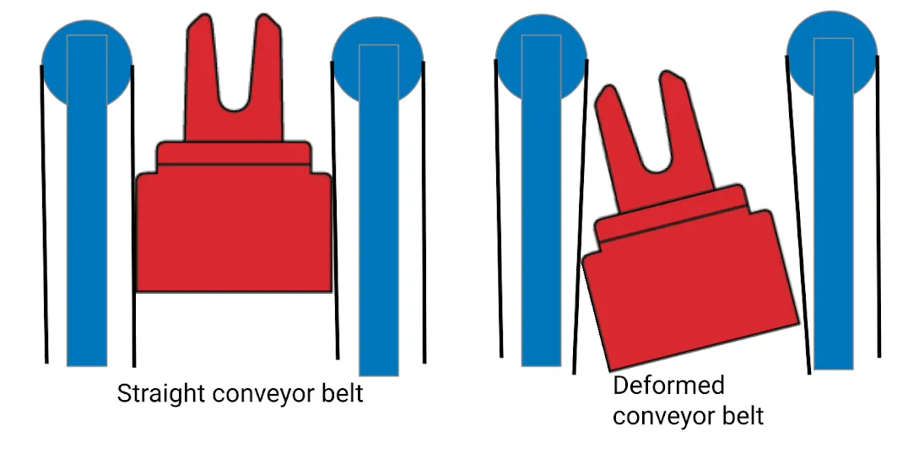
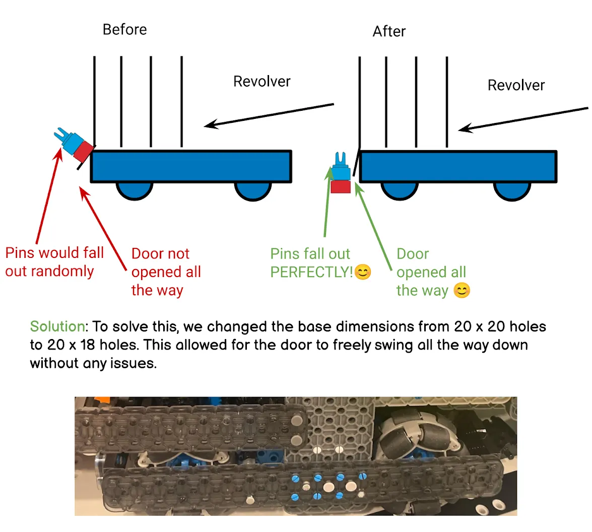

Big ideas.
Small discoveries.
Inside our engineering notebook: follow the sketches, tests, and design changes behind three student-built robots from our 2024–2025 and 2025–2026 seasons.
Catch the pin
From bending belts and tilted pins to a pneumatic catcher that holds a pin long enough for the conveyor to take it in.

A tilted pin misses its slot.
Pins sometimes jammed or flew out instead of entering the revolver. The team noticed that the conveyor belts bent around a pin, letting it lean away from the narrow opening.
The problem began inside the conveyor, before the pin reached the revolver.
Four motors drive the robot. The dedicated intake pair keeps the conveyor available.
Another small change: two holes made room for the doors

Give the door room to move.
The team first shifted the revolver rearward, then found that the drivetrain still blocked the doors. Changing the base from 20 × 20 holes to 20 × 18 holes allowed the doors to swing fully down.
A small dimension change solved a specific mechanical interference.